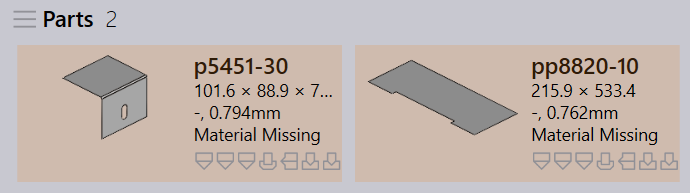
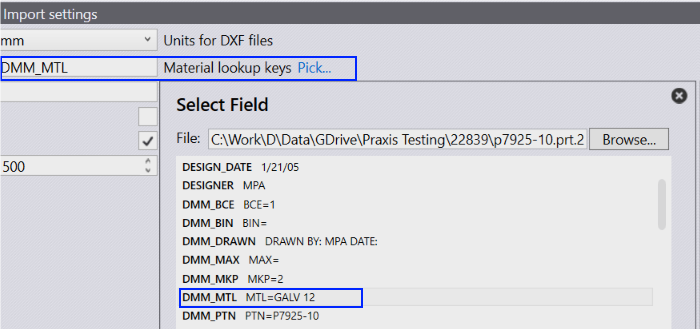
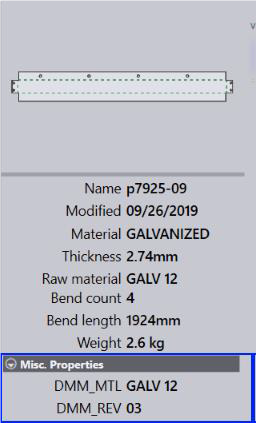

Material missing error is displayed when material is assigned but it is not found in the Praxis material database.

Make sure that you have the required material/ raw material entries (BRONZE, COPPER etc) in the database. Add material lookup key (For instance, PTC_MATERIAL_NAME in the below image) to help Praxis resolve the part material.
● Open factory dialog and switch to Imports page.
● Click on the Material lookup keys Pick… hyperlink to select the custom field name from the part.
● Browse and open the ProE part in the Field picker dialog to extract and list all custom fields with their values.
● Select the custom field and press OK to add it to the look keys.

Multiple lookup entries can be assigned using a comma separator between them. When a part is imported, Praxis uses these keys to search for material/revision values. The searched values and then to resolve the raw material. The original values are also stored in the part Misc . Properties
